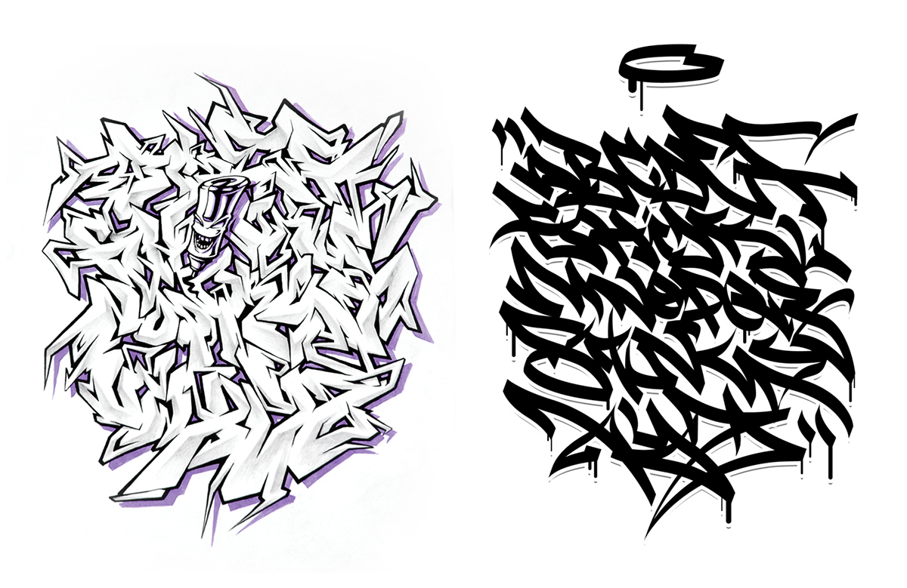
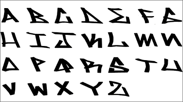
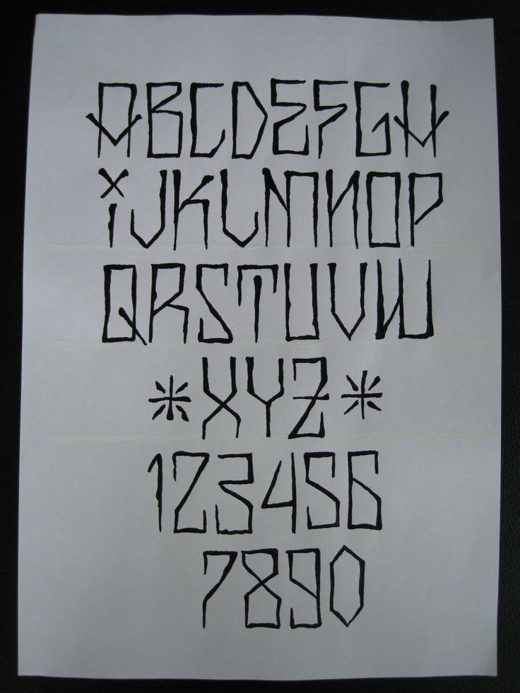
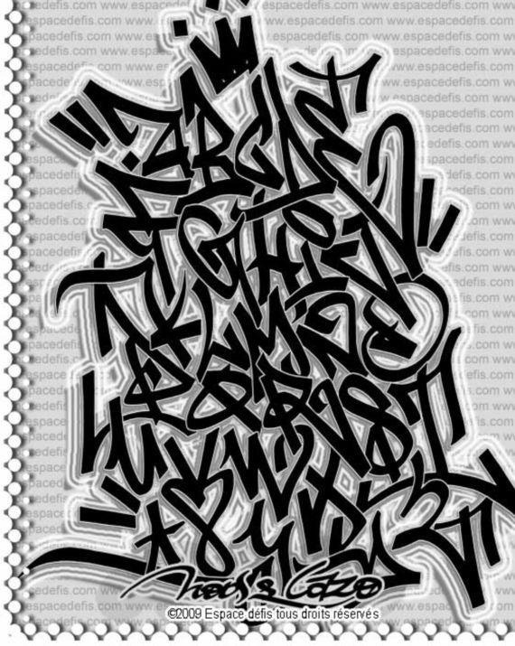
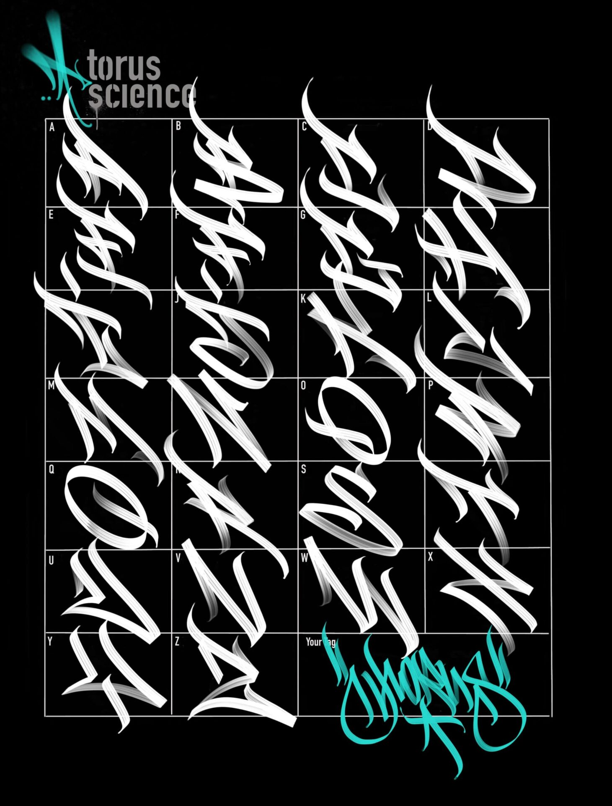

Una de las expresiones del grafiti es el tag, la firma del autor, su identificación ante los demás writers o escritores, como se hacen llamar. Es su señal de conquista del espacio, de llegar primero a ese lugar aún libre de aerosol. Hay algunos espacios en los que coinciden varios, como en una especie de conversación abierta.
como tal la cantidad de estilos que puede tener una firma no se sabria con certeza pero podemos mostrar lo que serian ciertos tipos de estilos generales que son:
| Nombre estilo | imagenes |
| tag wildstyle |  |
| tag simple |  |
| tag chicano |  |
| tag handstyle |  |
| tag handstyle alternativo |  |